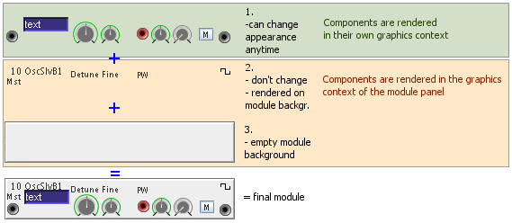
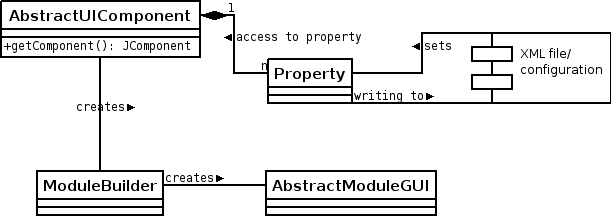

If you are going to write your own controls or theme for the modules you should read this document. Apart from technical things you should find some useful information that will help you to improve the quality of your theme.
When we thought about how to realize the user interface of the modules, the main argument that had lead to the current design, was just the amount of modules.
There are about 120 Modules available. Each of them containing different types of controls, displays, in- and outputs and decorating elements like labels or images. If you count for each module about 10 such components. And for each component have, say 4 custom properties that must be defined. Then there are about 4800 properties to define in total. Although the definition of these properties can not be avoided, one can make this task much more easy and more efficient.
We decided to build a system that generates the user interface for the modules using configuration files containing all information needed for this task. This way allowed us to write an editor for placing the components and setting their properties. The generated configuration file is used by a factory to generate the modules and link their controls, displays, in- and outputs with the current patch.
When we had created the classic theme, we found that the large number of components required to visualize a patch made the user interface slow and less responsive. We were able to trace this back to
There are two kinds of components on a module. One that can change their appearance any time, like controls, displays or connectors. And the others that do not change, like text-labels or images. Although we can not abandon the latter, we can help Java out by not using them. This is done by not adding them to the modules component list, but to let the module render them into its background buffer itself.

figure:layer rendering
This is only more efficient because we use double buffering and especially we use our own double buffering mechanism instead of the mechanism built into the swing components. (More on this you find in the next section of this document)
To realize this, we have to decide whether a component can change it's appearance or not. This is simply done by the property defined in AbstractUIComponent (Javadoc)
/**
* Sets the decorating property. If this property is set to true, then
* the component is not added to the module itself, but rendered directly
* to the module's background.
*
* This property should be set to true if the component can not change it's look anytime.
*
* @param enable true if component is a decorating component and does not change it's behaviour
*/
public void setAsDecoratingComponent(boolean enable) {
isDecorating = enable;
}Although swing components have built in double buffering support we have to use our own double buffering because the built in mechanism does not fullfill our requirements.
Swing components use VolatileImage (Javadoc) for double buffering. This is because VolatileImage is designed to have hardware accelleration support and to be as efficient (speed) as possible for on-screen rendering. Due to the limited memory of a graphic card and because a volatile image is stored in this memory, it can loss it's pixel-data anytime. (on the windows platform a VolatileImage can for example be a DirectX surface) The pixel-data can even get lost while the image is rendered. So a worst-case could be that a component must repaint itself several times before it is flipped on the screen.
Because the modules and their controls should look really pretty, they use many features like antialiasing, may have calculation expensive shapes (for example a round knob) or have gradient backgrounds. So loosing the pixel-data is also a loss in cpu time (remember, that there may be hundreds of such components).
Using our own double buffering allows us to use a different image type for double buffering. One that will not loose it's pixel-data. So we can save the repaint of a component in the cases the buffer was lost. This might sound a bit exaggerated, but really helped to improve the responsiveness of the user interface.
The Nomad sources contain the JPaintComponent (Javadoc) class which implements our custom double buffering. (Use it for components that are not rendered to the module background directly.) It uses BufferedImage (Javadoc) as buffer, which also is hardware accellerated (but less then VolatileImage) and is fast for on-screen rendering, too. Instead of
public void paintComponent(Graphics g)public void paintBuffer(Graphics g)

figure:meta model
The ModuleBuilder class uses the XML configuration file to set up the user interface of a module. This file contains the class-names of the components that the factory has to create and and custom property settings for each component.
Any component placed on the AbstractModuleGUI is (has to be) wrapped by AbstractUIComponent (the swing component is returned by getComponent():JComponent). The AbstractUIComponent class has several Property objects that provide access to attributes of the component like it's size or location either by the real type (for example Dimension or Point) or by a string representation for the attribute. The latter is neccessary because we must be able to write the attributes to the XML file and to read it back.
The xml file format is very simple. It contains
<?xml version="1.0" encoding="UTF-8"?>
<!DOCTYPE ui-description SYSTEM "ui-description.dtd">
<ui-description>
...
<module id="12">
<control class="nomad.gui.model.component.builtin.DefaultConnectorUI">
<property id="location" value="4,26" />
<property id="connector" value="connector.0.input" />
</control>
<control class="nomad.gui.model.component.builtin.DefaultControlUI">
<property id="location" value="73,15" />
<property id="port.0" value="parameter.0" />
<property id="knob.size" value="false" />
</control>
<control class="nomad.gui.model.component.builtin.DefaultLabelUI">
<property id="location" value="238,2" />
<property id="label.text" value="{@wf.tri}" />
</control>
...
</module>
...
</ui-description>
2005-11-14 (Christian) - Initial Document